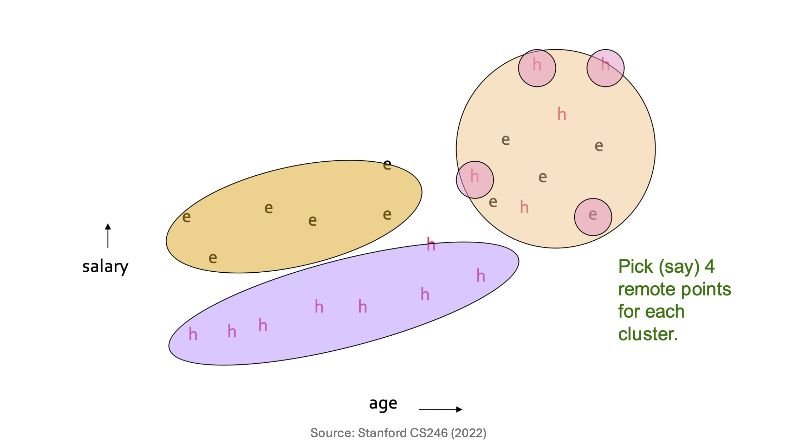
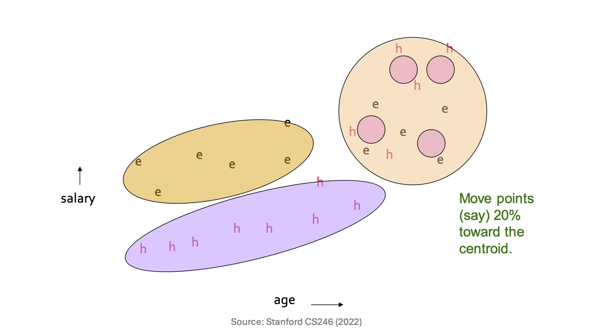

1. Introduction: 대용량 데이터 군집화의 과제
데이터 마이닝 실무에서 우리가 마주하는 가장 큰 장벽 중 하나는 데이터의 크기입니다. 만약 전체 데이터 셋이 너무 커서 메인 메모리(RAM)에 모두 적재할 수 없다면(Disk-resident data), 기존의 표준적인 군집화(Clustering) 알고리즘들은 정상적으로 동작하지 않거나 심각한 성능 저하를 겪게 됩니다.
이번 포스트에서는 이러한 물리적 한계를 극복하고 대규모 데이터를 효과적으로 군집화하기 위해 고안된 대표적인 알고리즘들을 개괄하고, 그중 CURE (Clustering Using REpresentatives) 알고리즘의 동작 원리를 수학적 직관과 함께 상세히 파헤쳐 보겠습니다.
2. Overview of Large-Scale Clustering Algorithms
- 대규모 데이터를 처리하기 위해 데이터 마이닝 분야에서는 다음과 같은 세 가지 주요 접근법이 논의됩니다.
- CURE (Clustering Using REpresentatives): 계층적 군집화(Hierarchical clustering)를 기반으로 한 가장 직관적이고 단순한 접근법입니다. 군집을 단일 중심점(Centroid)이 아닌 ’여러 개의 대표점(Representative points)’으로 표현하는 것이 핵심입니다.
- BFR Algorithm: 대용량 데이터를 위한 K-Means 알고리즘의 변형입니다. CURE에 비해 더 고도화되어 있지만, 그만큼 데이터의 분포에 대해 더 많은 수학적 가정(Assumptions)을 요구합니다.
- GRGPF Algorithm: 비유클리드(Non-Euclidean) 공간에서 활용할 수 있는 매우 영리한(Clever) 알고리즘입니다. 중심점(Centroid) 없이도 군집의 특성을 요약해내는 특징을 가집니다.
- 본 포스트에서는 유클리드 공간을 가정하는 2-Pass 알고리즘인 CURE에 집중하겠습니다. 사전에 군집의 개수 \(k\)가 주어졌다고 가정합니다.
3. CURE Algorithm: Core Concepts & Motivation
K-Means와 같은 기존 알고리즘은 하나의 군집을 하나의 중심점(Centroid)으로만 표현합니다. 이는 데이터가 완벽한 구형(Spherical)일 때는 잘 작동하지만, 길쭉하거나 기하학적으로 복잡한 형태의 군집을 잡아내는 데는 한계가 있습니다.
반면 CURE 알고리즘은 단일 중심점 대신 최대한 넓게 퍼져 있는 여러 개의 대표점(Representative points)의 집합을 사용하여 하나의 군집을 표현합니다. 이를 통해 다양한 모양과 크기를 가진 군집을 유연하게 포착하면서도, 모든 데이터 포인트를 메모리에 올리지 않고 2번의 디스크 스캔(2-Pass)만으로 전체 군집화를 완료할 수 있습니다.
4. CURE Algorithm: Step-by-Step Process
- CURE 알고리즘은 크게 두 번의 데이터 패스(Pass 1, Pass 2)로 나뉘어 실행됩니다.
Pass 1: 표본 추출 및 초기 군집화 (Memory-based)
- 첫 번째 단계의 목적은 데이터의 일부를 추출하여 메인 메모리 내에서 뼈대가 되는 초기 군집을 형성하는 것입니다.
- 표본 추출 (Sampling): 디스크에 있는 전체 데이터 중 무작위 표본(Random sample)을 추출하여 메인 메모리에 적재합니다.
- 계층적 군집화 (Hierarchical Clustering): 메모리에 올라온 표본 데이터를 대상으로 계층적 군집화를 수행합니다. 두 군집 간에 가장 가까운 점들의 쌍(Close pairs of points)이 존재할 때 두 군집을 병합(Merge)해 나갑니다.
- 대표점 선정 (Picking Representative Points): 각 군집을 대표할 점들을 선택합니다. 이때 군집 내에서 가능한 한 서로 멀리 떨어져 분산된(Dispersed) 점들을 표본으로 선택합니다 (예: 군집당 4개의 점).
- 대표점의 중심 이동 (Shrinkage): 선택된 대표점들을 해당 군집의 중심점(Centroid)을 향해 일정 비율(예: 20%)만큼 이동시킵니다.
- 최종 병합: 이렇게 조절된 대표점들을 기준으로, 가장 가까운 대표점 쌍을 가진 군집들을 최종적으로 병합합니다.

Pass 2: 전체 데이터 할당 (Disk Scan)
- 첫 번째 패스에서 만들어진 군집의 ’대표점’들을 기준으로, 이제 전체 데이터를 스캔하며 각 포인트를 소속시킵니다.
- 전체 데이터 재스캔: 디스크에 있는 전체 데이터 셋을 다시 한번 처음부터 끝까지 스캔합니다.
- 가장 가까운 군집 할당: 데이터 셋의 각 포인트 \(p\)를 “가장 가까운 군집”에 할당합니다.
- 포인트 \(p\)와 모든 군집의 모든 대표점들 사이의 거리를 계산하여 가장 가까운 대표점을 찾습니다.
- 포인트 \(p\)를 해당 대표점이 속한 군집으로 최종 할당합니다.
5. Mathematical Formulation: 대표점의 이동 (Shrinkage)
Pass 1의 4번째 단계인 “대표점들을 중심 방향으로 20% 이동시킨다”는 개념을 수학적으로 명확히 정의해보겠습니다.
주어진 군집 \(C\)에 대하여, 군집의 중심점(Centroid) \(\mu\)는 다음과 같이 정의됩니다. \[\mu = \frac{1}{|C|} \sum_{x \in C} x\]
우리가 군집 \(C\)의 외곽에서 선택한 분산된 대표점 중 하나를 \(p\)라고 합시다. 이 대표점 \(p\)를 중심점 \(\mu\) 방향으로 특정 비율 \(\alpha\) (강의 기준 \(\alpha = 0.20\)) 만큼 이동시킨 새로운 대표점의 위치 \(p'\)는 벡터의 내분 공식에 의해 다음과 같이 유도됩니다.
- 방향 벡터 설정: 대표점 \(p\)에서 중심 \(\mu\)로 향하는 벡터는 \((\mu - p)\) 입니다.
- 이동량 계산: 전체 거리의 \(\alpha\)만큼 이동하므로 이동 벡터는 \(\alpha(\mu - p)\) 가 됩니다.
- 최종 좌표 계산: 기존 위치 \(p\)에 이동 벡터를 더합니다. \[p' = p + \alpha(\mu - p)\]
- 이를 \(p\)에 대해 다시 정리하면 최종적인 수축(Shrinkage) 공식이 완성됩니다. \[p' = (1 - \alpha)p + \alpha\mu\]
결과적으로 새로운 대표점 \(p'\)는 원래의 대표점 \(p\)와 중심점 \(\mu\)를 \((1-\alpha) : \alpha\) 로 내분하는 지점에 위치하게 됩니다.
6. Interpretation and Intuition: 왜 20%를 중심 방향으로 이동시키는가?
- 가장 흥미로운 질문은 “왜 잘 골라놓은 대표점들을 굳이 군집의 안쪽(중심 방향)으로 20%만큼 밀어 넣는가?” 입니다. 여기에는 군집화의 품질을 극적으로 높이는 깊은 통계적 직관이 숨어 있습니다.
- 이상치(Outlier) 및 경계선 문제 완화: 군집 내에서 ’가장 분산된 점’을 고르다 보면 필연적으로 군집의 경계선(Boundary)에 아슬아슬하게 걸쳐 있거나 아예 노이즈/이상치인 점이 대표점으로 뽑힐 확률이 높습니다. 이 점들을 안쪽으로 20% 수축시키면 이상치의 영향력을 효과적으로 줄일 수 있습니다.
- 군집 밀도(Density)에 따른 차등적 축소 효과: 넓게 퍼져 있는(Dispersed) 거대한 군집은 점들이 중심에서 멀기 때문에 20%를 이동시켰을 때의 절대적인 이동 거리가 깁니다. 즉, 크게 수축(Shrink)됩니다. 반면, 작고 조밀한(Dense) 군집은 20%를 이동시켜도 원래 위치와 큰 차이가 없습니다.
- 작고 조밀한 군집 보호: 결과적으로 엉성하게 퍼진 노이즈성 군집은 대표점들이 안쪽으로 크게 오그라들면서 영향력이 약해지고, 작고 뚜렷한(Dense) 군집은 자신의 영역을 확고히 방어하게 됩니다. 즉, 알고리즘 자체가 작고 밀도 높은 군집을 유리하게 판별(Favor)하도록 설계된 것입니다.

7. Summary
- 대용량 데이터를 다루는 CURE 알고리즘은 데이터를 샘플링하여 뼈대를 잡는 Pass 1과 전체 데이터를 스캔하여 할당하는 Pass 2로 구성됩니다. 핵심은 단일 중심점이 아닌 여러 개의 분산된 대표점을 사용해 복잡한 형태의 군집을 파악한다는 점이며, 대표점들을 중심으로 20% 수축시키는 기발한 아이디어를 통해 이상치에 강건하고 밀도 높은 군집을 효과적으로 찾아냅니다.